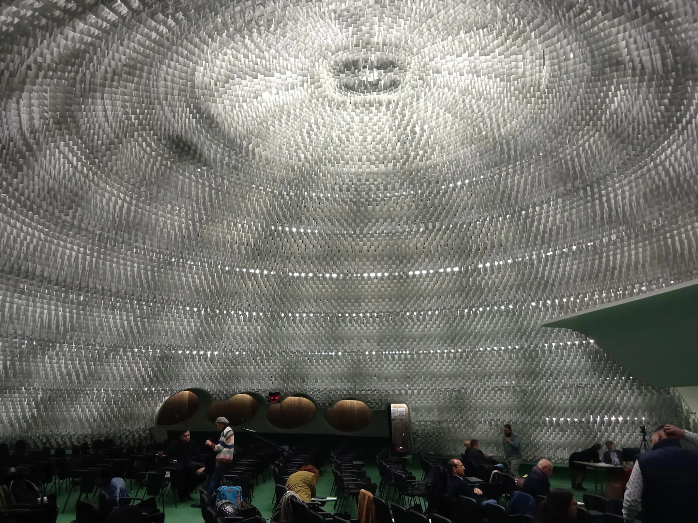
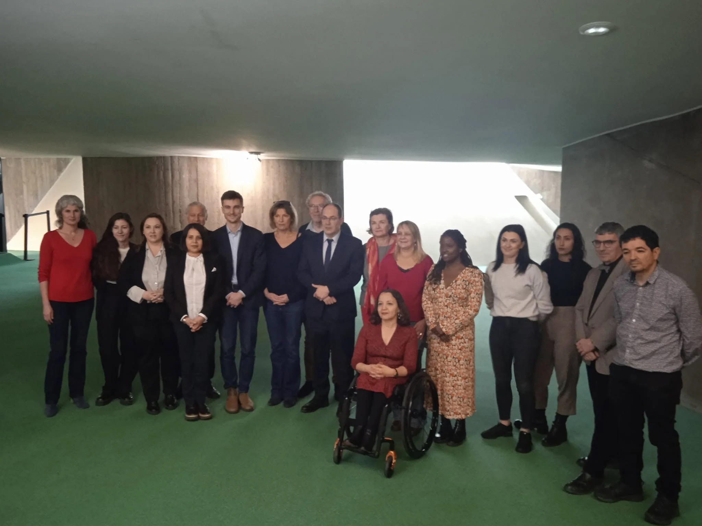
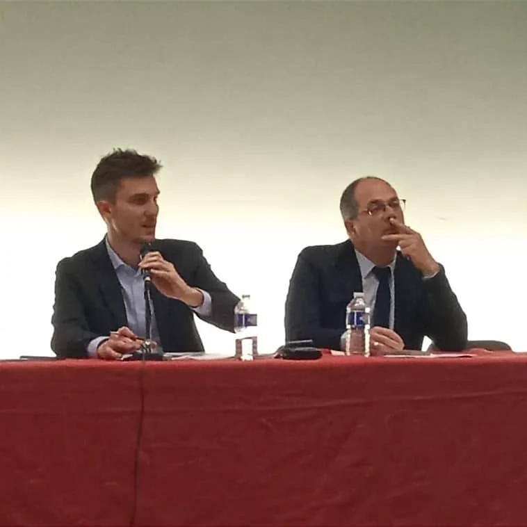
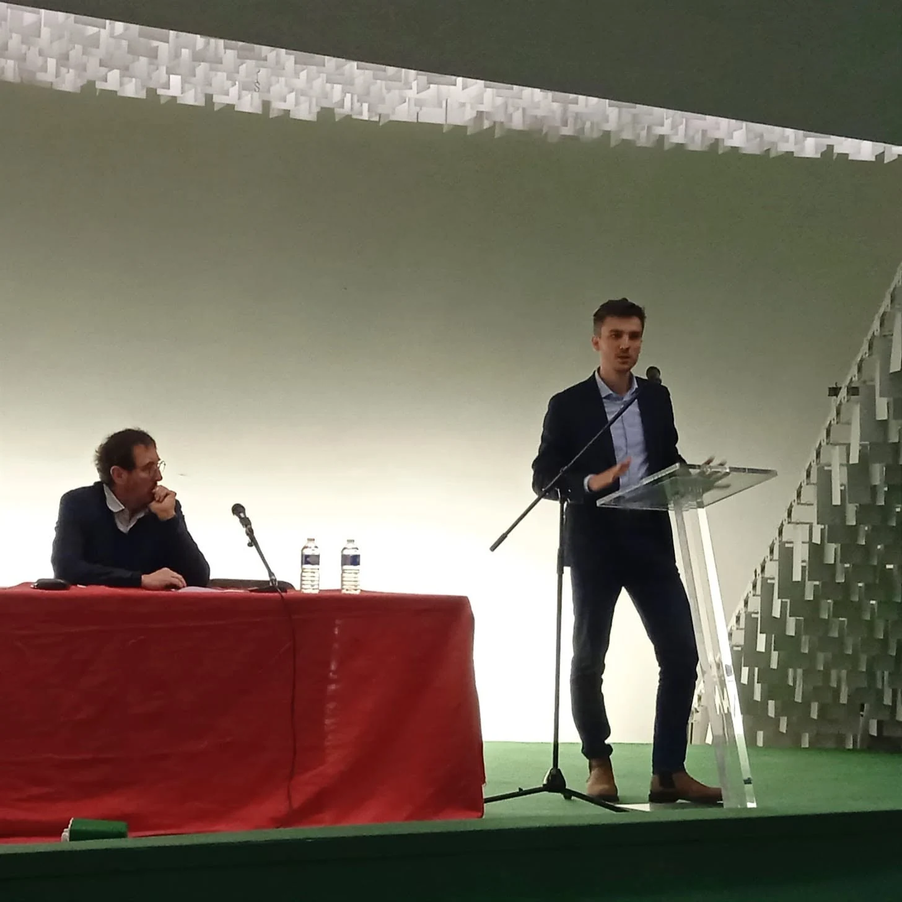
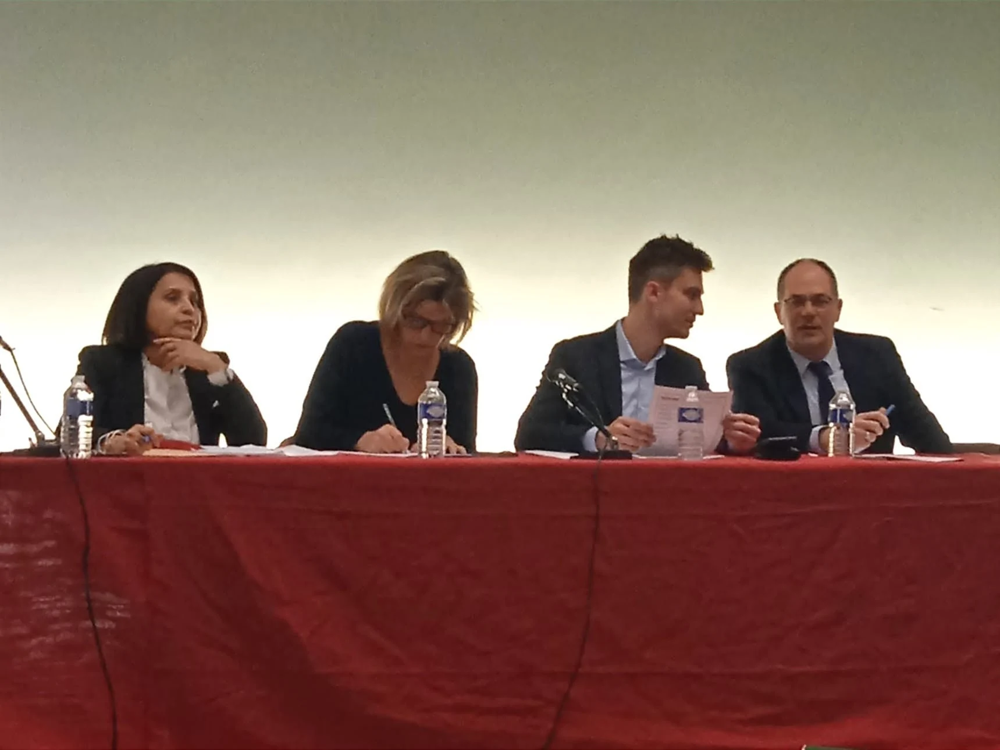
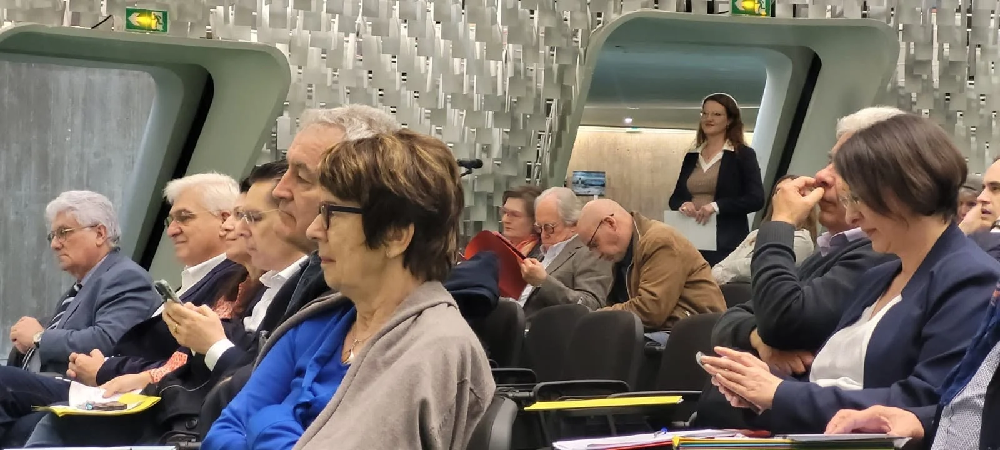

Publication relayée par le PCF 79
Élisabeth Jutel revient sur le lancement de campagne au siège du PCF
Date de mise à jour indiquée par Facebook · 24 mars 2024
Texte de la publication · Élisabeth Jutel
Quelle joie, et quel honneur !, d'avoir été reçue aujourd'hui au mythique siège du PCF - Parti Communiste Français , place du Colonel Fabien à Paris.
Notre campagne pour les européennes est lancée, nous sommes une très belle liste composée de syndicalistes et de représentants de 4 partis de gauche républicaine, dont la Gauche Républicaine & Socialiste (GRS) d' Emmanuel Maurel
La liste s'appelle "Gauche Unie pour le monde du travail avec le soutien de Fabien Roussel " et elle est menée par l'excellent Léon Deffontaines. (Ne le manquez pas lors des débats télévisés à venir : il est très bon, c'est réjouissant.)
Plus infos ici :
https://www.deffontaines2024.fr/
PCF 79 - Parti Communiste Français fédération des Deux-Sèvres






Sources
Élisabeth Jutel · publication relayée par le PCF 79 · bibliothèque Facebook · AR-0002-FB-01437
À lire aussi · À Bressuire, agriculture, industrie et pouvoir d’achat au débat du 30 mai